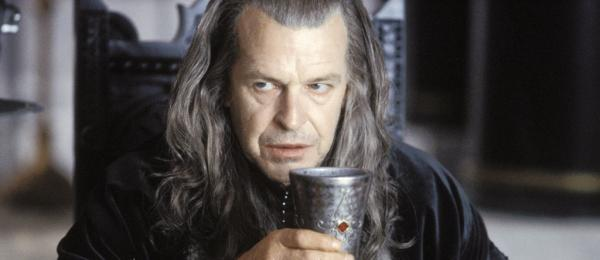

Personagens
Os Hobbits
Frodo Bolseiro
Hobbit do Condado e portador do Anel. Frodo nasceu no ano de 2968 da Terceira Era, filho de Drogo Bolseiro e Primula. Órfão desde a infância, foi adotado por seu primo, Bilbo Bolseiro de Bolsão. Frodo era extremamente aventureiro e muito erudito; era escritor de canções e algo como um estudioso das lendas e do idioma dos elfos. Em 3001, quando Bilbo deixou misteriosamente o Condado, Frodo herdou o Um Anel. Em 3018, Gandalf o Mago reapareceu e fez Frodo participar da Missão do Anel, para o qual enviou a Valfenda, onde se formaria a Sociedade do Anel.
Bilbo Bolseiro
Hobbit do Condado. Nascido no ano de 2890 da Terceira Era, Bilbo era um hobbit solteiro que vivia em Bolsão. Em 2941, Bilbo foi atraído por um mago e treze anões para participar da famosa missão de Thorin e Companhia que, em 2941, provocou a morte de Smaug, e o restabelecimento do Reino Anão em Erebor. Com uma modesta porção do ouro do dragão que havia ganho em sua aventura, Bilbo voltou ao Condado, onde passou uns sessenta anos. Durante a aventura, Bilbo adquiriu um misterioso anel que tinha o poder de tornar invisível quem o colocasse. Mais adiante se descobriria que este anel, era na realidade, o Um Anel, que pertencia ao Senhor dos Anéis. No ano de 3001, Bilbo celebrou uma grande festa de aniversário e logo desapareceu perante os olhos de todos os seus convidados, deixando sua riqueza, sua casa e o Um Anel ao seu jovem primo e herdeiro adotivo, Frodo Bolseiro. .
Meriadoc Brandebuque (Merry)
Merry é mais sagaz e inteligente que um hobbit normal. Um mestre em travessuras, Merry geralmente consegue convencer seu impetuoso comparsa no crime, Pippin, a tomar parte em seus esquemas. Merry tem raciocínio rápido e é cheio de recursos, confiante e alegre. Ele sonha em ser heróico, mas é um fato que ele não é naturalmente corajoso e surpreende a si mesmo quando finalmente é chamado a um grande feito no campo de batalha...
Peregrin Tûk (Pippin)
O mais jovem hobbit, Pippin é impulsivo, sincero e um bola de energia. Ele é encantador e destemido, mas sua falta de maturidade e visão tende a colocá-lo em problemas. Pippin é intrépido, principalmente porque ele não para para pensar no perigo, mas também porque ele tem um grande coração. Ele é inocente e de natureza crédula que agradam prontamente as outras pessoas.
Samwise Gamgee
Sam é freqüentemente uma fonte inconsciente de humor - embora ele seja mais astuto do que alguns imaginam. Ele é não-sofisticado, de pavio curto e desconfiado. Sam encara cada nova jornada geralmente com maus presságios sombrios, mas também com uma amarga determinação de ver o trabalho feito. Um humilde jardineiro, sua intensa lealdade a Frodo mostra-o realizando grandes altos de auto-sacrifício e heroísmo. No final da história, Sam cresce secretamente em tamanho e sua última despedida de Frodo, embora cheia de tristeza, também revela a profundidade da compreensão e sabedoria que Sam adquiriu.
Os Humanos
Aragorn
Ele é enigmático, sofredor, Aragorn carrega uma aura de majestade e poder oculto consigo, mas também um grande senso de humanidade e bondade. Aragorn trava uma grande luta interna ao encarar seu destino como Rei. Valoroso, nobre e amargo, nunca procura por poder e possui um medo inato da natureza corruptora do poder. A linhagem nobre de Aragorn é inicialmente oculta sob a pessoa de "Passolargo", um misterioso guardião que costuma a viver de modo duro e hábil em região inexploradas. Aragorn é um hábil lutador com espada.
Boromir
Boromir é o filho mais velho de Denethor, Regente de Gondor introvertido e de certa forma solitário, ele tem sido oprimido por um pai dominador e violento. Boromir não confia em outras pessoas, em especial Magos e regularmente trata Gandalf com desdém. Boromir acredita na grandeza dos homens, mas ele não acredita realmente em si mesmo. O mais agradável lado de sua personalidade trazido à tona pelos Hobbits, dos quais ele gosta muito. Boromir é facilmente influenciado pelo poder do Anel e sob sua influência ele se torna completamente mal intencionado. Entretanto ele percebe seu erro e muito honoravelmente se redime, morrendo como herói para salvar Merry e Pippin.
Faramir
Segundo filho de Denethor, Regente de Gondor, Faramir cresceu à sombra de seu irmão, o poderoso Boromir. Confiável, intensamente leal a Gondor e seu povo, Faramir é perito em ocultar a dor e humilhação que sofreu de seu pai. Ele não é sério ou amargo por natureza, mas teve um desgaste prematuro pois logo que nasceu sentiu o peso dos problemas de seu pai. Acima de tudo, Faramir é extremamente honrado e mostra uma sabedoria bem acima de sua idade.
Eowyn
Sobrinha do Rei Theoden, Eowyn é alguma vezes chamada Senhora Branca de Rohan - em parte à sua palidez e seu longo e belo cabelo como também à sua solene reserva, erradamente tomada como frieza. Ela não tem comparação como cavaleira, pode usar uma espada tão bem como qualquer homem e não é delicada nem sentimental. Também tem uma língua afiada e uma inteligência cáustica, mas mostra grande vulnerabilidade quando seus sentimentos são atingidos. Este é o particularmente o caso com Aragorn, com quem se apaixonou, sem esperanças e solução.
Denethor
O Regente de Gondor, Denethor é um homem preocupado e com um temperamento violento que tende a tomar decisões irracionais. Ele é desconfiado, obsessivo, dominador e não razoável. Denethor é o regente de Gondor, mas é bastante ciente de que o Regente apenas o guardião do trono, até que o rei retorne. Denethor não aceita isto e resiste à idéia de que um dia o verdadeiro rei irá tomar o poder. Denethor é depressivo, prevendo desgraças e destruição a cada oportunidade. Ele encarou muito mal perda de seu filho, Boromir, culpando seu filho mais novo, Faramir, pela sua morte.
Theoden
Muito parecido com a imagem de um Rei Nórdico com uma possível aparência nórdica.Ele é o Rei de Rohan. Theoden é mais velho que sua idade; aflito e distraído, está sob a influência de um conselheiro perspicaz e manipulativo, Língua-de-Cobra. Apenas quando Língua-de-Cobra é expulso que Theoden retorna ao seu antigo eu, deixando vinte anos de decrepitude para assumir o manto da realeza.
Éomer
Sobrinho de Théoden, rei de Rohan, Éomer, homem forte e ruivo, como quase todos de sua raça, participou da Guerra do Anel com muita bravura.
Grima
O conselheiro do Rei Théoden de Rohan, que agiu como espião de Saruman para manter o reino de Rohan enfraquecido. Após a destruição de Isengard pelos Ents, ele acompanhou Saruman para para o norte até o Condado.
Os Magos
Gandalf
Mago da Terra-média. Durante mais de dois mil anos Gandalf lutou contra os poderes do mal que ressurgiam na Terra-média. Em 2941, Gandalf liderou a Missão à Montanha Solitária que trouxe a morte de Sméagol. Durante esta missão, Gandalf conseguiu a espada Glamdring, e Bilbo Bolseiro encontrou o Um Anel. Em 3018, Gandalf foi visitar Frodo Bolseiro no Condado e deu início à Missão do Anel. Em Valfenda passou a formar parte da Sociedade do Anel.
Saruman
O Vilão Chave da história. O líder dos istari, os Magos que oferecem conselho às criaturas da Terra-média, Saruman possui imensa estatura e dignidade. Como a história revela nós aprendemos que ele foi corrompido pelo desejo de poder e traiu seu dever sagrado. Uma vez nobre e sábio, é agora arrogante e esperto, falso e egoísta.
Os Elfos
Galadriel
Mais jovem filha, e única filha mulher, de Finarfin dos Noldor, Galadriel nasceu em Valinor quando as Duas Árvores ainda cresciam. Ela viajou para a Terra-média no início da Primeira Era com seus quatro irmãos. Em Beleriand, ela frequentemente ia aos salões de Thingol (a quem era aparentada; pois sua mãe era sobrinha de Thingol), e lá conheceu Celeborn. Após a Guerra da Fúria e a destruição de Beleriand, a maioria dos Noldor retornou a Valinor, mas Galadriel e Celeborn permeneceram na Terra-média. Após a perda de Amroth em 1981 (Terceira Era), Galadriel e Celeborn tornaram-se Senhor e Senhora de Lothlórien, e lá residiram até o final da Terceira Era.

Arwen
Arwen é uma Elfa, e por virtude de nascimento, imortal. Tudo sobre Arwen é "Ligeiro" - sua agilidade, seu sorriso, seu temperamento, seu entendimento. Ela parece gostar de jogar contra as pré-concepcões da clássica e serena dama Élfica. Ele veste uma armadura, cavalga rápido e deu seu coração a um homem mortal. O amor de Arwen por Aragorn é profundo e vigilante. Mas também ama seu pai, o Lorde Elrond, e custa muito a ela desafiá-lo. A jornada de Arwen é em direção a um profundo entendimento da escuridão e do mal que existe no mundo e um verdadeiro entendimento do que significa ser mortal.
Legolas
Um príncipe dos Elfos da Floresta, Legolas é um arqueiro mortal, que pode se mover com grande discrição. Alto, magro e de constituição fina, Legolas é fisicamente tudo o que Gimli o anão não é. Legolas vê Gimli como sério, obcecado pelo trabalho e um pão-duro sem humor. É o dinâmico deste "estranho casal": dois opostos constantemente brigando e se provocando, cada um fazendo piadas às custas do outro. Mas além da veia de humor irônico Legolas se preocupa muito com aqueles que prometeu proteger e no final ele e Gimli se tornam bons amigos.

Elrond
Senhor dos Elfos de Valfenda e pai de Arwen, Elrond possui grande autoridade e sabedoria, mas também humildade. Ele é de certa forma um vidente e está preocupado com o amor de sua filha por um mortal, Aragorn, conhecendo como ele conhece o destino escuro de Aragorn. Em um sentido mais amplo, Elrond sente uma grande tristeza pois a Era dos Elfos está chegando ao fim - mas ele não tenta mudar este fato, aceitando seu destino.
Celeborn
Um Elfo de Doriath, que encontrou com Galadriel filha de Finarfin depois do Retorno dos Noldor para a Terra-média e casaram-se. Tornaram-se Senhor e Senhora de Lórien durante a Terceira Era.
Outras Raças
Gimli
Um anão combativo com um grande coração.Gimli é bravo e corajoso; um guerreiro até o âmago, que vive pelo código dos guerreiros, e leal até o fim. Gimli é um espírito vociferante que gosta de zombar de Elfos, em particular Legolas. Gimli ama o vinho e mulheres e músicas e possui um senso de humor sincero. Embora dificilmente refinado, ele é capaz de apreciar a beleza, especialmente a beleza de minas bem talhadas e túneis feitos por seus ascendentes.
Gollum (Sméagol)
Gollum foi uma vez um hobbit, chamado Sméagol, nascido no Vale do Anduim. Em 2463 da Terceira Era, o primo de Sméagol, Déagol, encontrou o Um Anel pescando, onde Isildur o perdeu dois milênios antes. Então Sméagol o matou imediatamente para ficar com o Um Anel. O poder do Anel aumentou a vida de Sméagol, mas o deformou até deixá-lo irreconhecível. A partir daí passou a se chamar Gollum, pelos ruídos guturais que fazia quando tentava falar. Com o Anel em seu poder, escondeu-se nas Montanhas Sombrias, e foi trazido aos eventos do final da Terceira Era quando encontrou Bilbo Bolseiro, que tomou o anel dele.
Tom Bombadil
Tom Bombadil era o nome que os hobbits davam ao poderoso e excêntrico Senhor da Floresta Velha. Era uma pessoa muito alegre e estranha. Tinha o aspecto de um homem baixo e corpulento com os olhos azuis, a cara avermelhada e uma barba castanha. Sempre estava cantando e falando em rima, o que fazia parecer um louco, mas dentro da Floresta Velha seu poder era absoluto.

Barbárvore
Barbárvore era o Ente guardião do Bosque de Fangorn. Era um gigantesco Pastor de Árvores de mais de quatro metros de altura. Durante a aventura da Guerra do Anel, como era o mais velho de sua raça, realizou um "Entebate"na presença de Merry e Pippin e ajudou os membros da Sociedade do Anel, junto com os outros Ents, a destruir Isengard e aprisionar Saruman, o Branco.
Orcs
Os Orcs são membros de uma raça descendente dos Elfos que foram modificados e pervertidos por Morgoth durante a Primeira Era. Embora eles não sejam maus por natureza, eles são culturalmente e mentalmente predispostos para Escuridão e para a Maldade. Existem três tipos de raça Orc: os Orcs Comuns, os Uruk-Hai e os Meio-Orcs.
Balrogs
Enormes e ígneos, estão entre os mais temidos dos habitantes da Terra-Média. Eles são muito inteligentes, muito espertos, e capazes de causar uma destruição volumosa quando estão de mau-humor. A sua arma física mais temida é o seu chicote de fogo, mas a outra mão deles freqüentemente estão preenchidas com alguma arma secundária como uma espada ou maça-de-guerra. Os Balrogs podem "voar" por cima de obstáculos e não têm que tocar o solo exceto quando se encontram em um espaço pequeno. Eles também possuem a habilidade para alterar o tamanho deles consideravelmente.
Sauron
O Senhor dos Anéis. Nos tempos antigos, ele seduziu os Elfos de Eregion para que forjassem os Anéis do Poder. Então se converteu no Senhor dos Anéis ao forjar o Um Anel. O livro O Senhor dos Anéis conta a história da busca de Sauron ao Um Anel que foi perdido durante a Última Aliança.